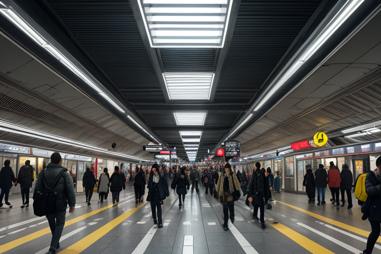
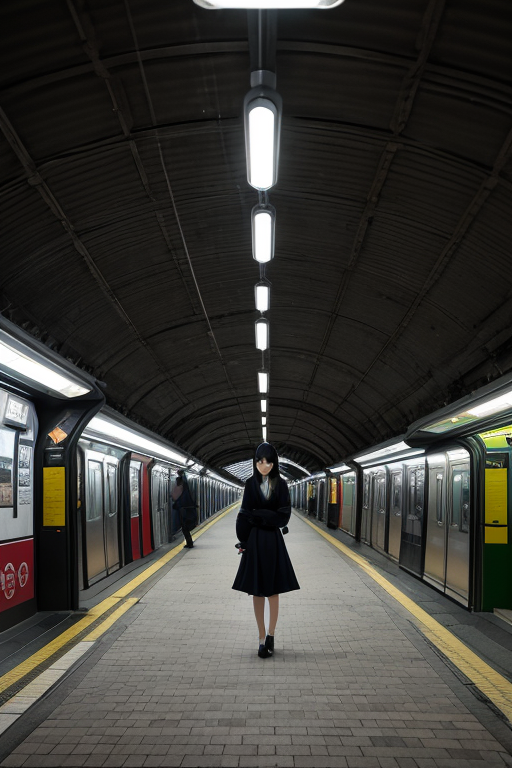
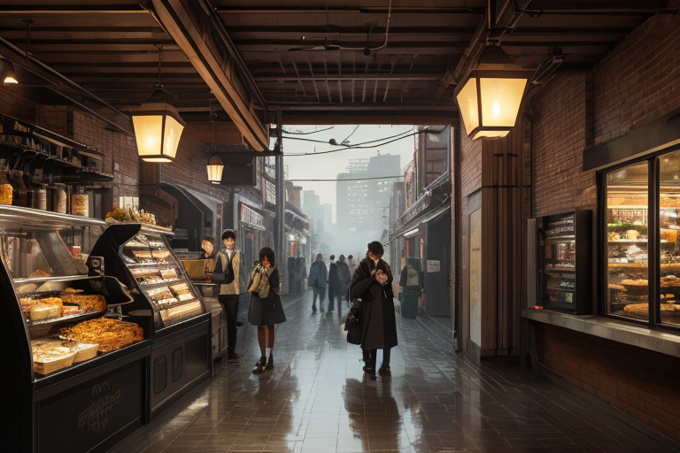
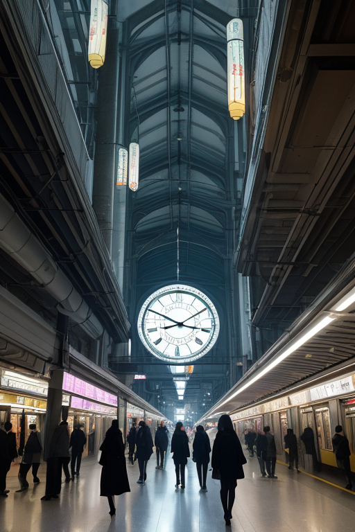

第一章 現実の愛知
あなたはまだ気づいていない。この土地にも、王がいることを。
名古屋駅前の巨大なスクランブル交差点。人々の流れは、秒単位で計算された信号の周期に従い、無数の欲望と実利を運ぶ。地下街は常に一定の温度に保たれ、店舗の照明は購買意欲を最大化するために調整されている。ここは、合理が呼吸する街だ。
その中心で、彼は立っていた。アイチア・メカニカ、機構王。銀色に光る均整線が彼の周囲をかすかに漂い、交差点全体の人の「流れ」と、その下を走る地下鉄の「振動」を同時に監視している。感情のない瞳は、データの奔流を映すだけだ。彼の傍らには、小さな歯車の精霊、メカリスが浮かび、無言で都市の鼓動を記録する。
「歪み、検知。名古屋城下、東経136度…」
彼の声は、機械の作動音のように平坦だ。巨大な地下プレートの境界で、微細なストレスが蓄積しつつある。彼は指をわずかに動かす。見えない力が働き、そのストレスを隣接する三つのブロックに分散させる。今日も、大地の軋みは、誰にも知られずに調整される。
合理はすべてを最適化する。だが、合理は、この雑踏に漂う焦燥や孤独という「心の歪み」には、未だ介入できない。

第二章 歪みの兆候
トヨタ産業技術記念館の巨大な織機は、規則正しいリズムで動き続けていた。アイチアはその前で、都市の鼓動を聴いていた。人の流れ、金の流れ、物流の脈動。それらは全て、彼が調整すべき「歪み」の前兆としてデータ化される。今日、名駅周辺の人流データに、統計上は無視できるほどの、しかし彼には明らかな「乱れ」が検出された。通常とは異なる方向への人の移動、一瞬の滞留。それは物理的な地震の前触れではない。経済活動の、ごく微細なひずみだ。
彼は地下鉄の改札前で一人佇むサラリーマンの背中を見た。鞄の持ち方が、昨日より0.3秒遅い。眉の間に、データには表れない疲労の影。合理は現象を最適化できる。しかし、その現象を生み出す「心」の消耗は、彼の計算式には変数として入力できない。メカリスが報告する地盤の微振動と、この男の肩の硬さは、同じ都市が発する異なる周波数の歪みだった。

第三章 王の葛藤
トヨタ産業技術記念館の赤レンガの前に立つと、巨大な蒸気機関がかつて刻んだ規則正しい振動が、地層のように残っているのが感じられた。アイチアはその振動を手本に、今日も都市の経済活動のリズムを微調整していた。株価の急落を0.5%緩和し、物流の停滞を三つの信号周期で解消する。合理の計算は完璧だった。
しかし、覚王山の喫茶店でモーニングを摂る老店主のため息は計算できなかった。三十年続けた店が、再開発の波に飲まれようとしている。その無念は、地価の変動データには現れない「心の歪み」だった。メカリスが報告する地盤の安定データと、店主の揺れる心は、彼の前で矛盾として立ち現れた。
「計算上、再開発は都市の効率を13.7%向上させます」
メカリスの声は平然としていた。
アイチアは銀の瞳を細めた。効率という答えは出ている。ならば、これ以上関与する必要はない。合理が命じるのは、彼らが定めた「最適解」への調整だけだ。彼は目を閉じ、店主のため息という「雑音」を計算式から除外しようとした。
その時、店主が愛おしそうにコーヒーカップを拭く指先の、ほんのわずかな震えが、アイチアの銀の瞳に映った。それは、この都市が生み出す、もう一つの振動だった。
第四章 妖精との対話
「それは『損失』ではないのですか、メカリス。」
アイチアは、カウンター越しに店主を見ながら、妖精に問うた。店主は、客のいない店内で、丁寧に食器を磨き続けていた。
「計算上、この店の継続は非合理です。閉店し、負債を整理する方が効率的です。」
メカリスは、天井の梁に座り、店主の動きを観察していた。
「王よ。あなたの計算は正しい。しかし、この『非合理』こそが、この土地の振動を安定させている要素の一つです。」
妖精の声は、機械の歯車が噛み合うような正確さで響いた。
「店主は、利益だけでなく、『ここに店がある』という事実そのものを商っています。朝、このドアを開ける行為。通りすがりの人が看板を見て安心する一瞬。それらは、都市の『流れ』に、目に見えない錨を下ろします。私たちが調整する物理的な歪みと同じく、心の歪みもまた、このような無数の錨によって、かろうじて均衡を保っているのです。」
アイチアは黙った。店主が磨き上げたカップは、朝の光を微かに反射していた。それは、売上という数値には換算できない、何かを確かに映していた。

第五章 微調整と余韻
名古屋駅の巨大な構内は、常に人の波が渦巻いていた。アイチアはその流れの只中に立ち、目を閉じる。メカリスが報告する地盤の微細な歪み、テクノリアが監視する工場地帯のリズム。彼はそれらのデータを頭の中で統合し、調整を開始した。一歩踏み出すタイミングを0.5秒遅らせる。向かい風の強さを1%弱める。落下する看板のネジの緩みを、たまたま通りかかる整備士の視界に入れる。すべては数値で記述可能な、物理的な微調整だ。
彼は合理の化身である。感情は計算のノイズでしかない。しかし、0.5秒遅れた男は、ふと足を止め、売店で母親への土産を買った。風が弱まった場所で、少女が飛ばした風船を母親が追いかけ、笑い声が上がった。整備士が看板を固定し、下を通る老人は何事もなく通り過ぎた。
誰も気づかない。災害は起きていない。ただ、いくつかの「もしも」が、かすかな軌道修正をされていた。アイチアは銀色の瞳を開け、駅の時計を見上げた。計算上、今日の調整は完了した。合理は心を救わない。救うのは、合理によって生み出された、ほんの少しの「余白」なのだ。彼はそう悟りながら、再び人波に溶けていった。
あなたの町にも、王がいる。